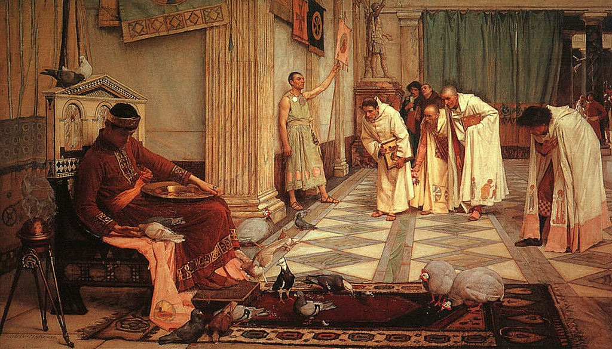

<head>
<meta charset="UTF-8" />
<meta name="keywords" content="drawing, painting" />
<meta name="description" content="drawings by Sunjy" />
<title>Sunjy</title>
<link rel="shortcut icon" type="image/x-icon" href="../../mImages/mCommon/favicon.ico" media="screen" />
<link rel="stylesheet" type="text/css" href="../../mCsses/mCommon/mCssA.css" />
<link rel="stylesheet" type="text/css" href="../../mCsses/mCommon/mCssB.css" />
<link rel="stylesheet" type="text/css" href="../../mCsses/mCommon/mCssC.css" />
<link rel="stylesheet" type="text/css" href="../../mCsses/mCommon/mCssD.css" />
<link rel="stylesheet" type="text/css" href="../../mCsses/mContent/mCssA.css" />
<link rel="stylesheet" type="text/css" href="../../mCsses/mContent/mCssB.css" />
<link rel="stylesheet" type="text/css" href="../../mCsses/mContent/mCssC.css" />
<link rel="stylesheet" type="text/css" href="../../mCsses/mContent/mCssD.css" />
</head>
<script type="text/javascript" src="../../mScripts/mContent/mContentAA.js" /></script>
<script type="text/javascript" src="../../mScripts/mContent/mContentAB.js" /></script>
<script type="text/javascript" src="../../mScripts/mContent/mContentAC.js" /></script>
<script type="text/javascript" src="../../mScripts/mContent/mContentAD.js" /></script>
<script type="text/javascript"></script> 
<script type="text/javascript">
document.write('<div class="mImgAbsolute"></div>');
/*
document.write('<p class="mFontSizeBColor" />From a white paper...</p>');
document.write('<table class="center"><tr><td>');
document.write('');
document.write('</td></tr></table>');
*/
</script>


<script type="text/javascript">
document.write('<p class="mFontSizeBColor" />The Favorites of the Emperor Honorius</p>');
document.write('<p class="mFontSizeSColor" />“The Favorites of the Emperor Honorius” by John William Waterhouse portrays the “Emperor of the West” feeding birds which are on the rug in front of him. <br><br>The colors of the Emperor’s clothes and the carpet dominate the foreground. In contrast to the councilors seeking his attention, and who, along with the attendants, are dressed in paler shades.<br><br>However, the Emperor is also shown as indecisive, his face in shadow. This depiction is in contrast to Augustus’s statue in the background, which is bathed in light.<br><br>Honorius is considered as one of the worst emperors during the last period of the Eastern Roman Empire. During his reign, Rome was attacked and sacked for the first time in 800 years.<br><br>Honorius, whose name in Latin is Flavius Honorius Augustus (384 – 423), was the Western Roman Emperor from 393 to 423.<br><br>He was the younger son of Emperor Theodosius I, and brother of Arcadius, who was the Eastern Emperor in Constantinople. Honorius’s reign was precarious and chaotic during a period in which the Western Roman Empire was in rapid decline.<br><br>In an early history of this period, it is claimed that on hearing the news that Rome had “perished,” Honorius was initially shocked, thinking the news was about a favorite chicken which he had named “Roma.”<br><br>This painting depicts Honorius feeds his pigeons, indifferent to the news that Rome has fallen. Gibbon states:<br><br>“the amusement of feeding poultry became the serious and daily care of the monarch of the West …….<br>passed the slumber of his life, a captive in his palace, a stranger in his country,<br> and the patient, almost the indifferent,<br> spectator of the ruin of the Western empire,<br> which was repeatedly attacked, and finally subverted, by the arms of the Barbarians.” <br><br>After the Visigothic invasion of Italy in 402, Honorius and the imperial court retired to the remote and heavily defended city of Ravenna.<br><br>Honorius was timid and generally took little part in public affairs; he was usually passive and left the running of the empire to his generals and assistants.<br><br>Waterhouse worked in the Pre-Raphaelite style, several decades after the breakup of the Pre-Raphaelite Brotherhood.<br><br>Pre-Raphaelite Brotherhood included artists such as Dante Gabriel Rossetti, John Everett Millais, and William Holman Hunt.<br><br>Waterhouse embraced the Pre-Raphaelite style even though it had gone out of fashion in the British art scene.<br><br>Pre-Raphaelites<br><br>The Pre-Raphaelites was a group of English painters, poets, and art critics, founded in 1848.<br><br>The group intended to reform art by rejecting what it considered the mechanistic approach first adopted by the artists who succeeded Raphael and Michelangelo, hence the name “Pre-Raphaelite.”<br><br>The Pre-Raphaelite Brotherhood sought a return to the abundant detail, intense colors, and complex compositions of Pre-Raphaelite Italian art.<br><br>The Pre-Raphaelites focused on painting subjects from modern life, and literature often used historical costumes for accuracy.<br><br>They painted directly from nature itself, as accurately as possible, and with intense attention to detail.<br><br>The Pre-Raphaelites defined themselves as a reform movement, created a distinct name for their art, and published a periodical to promote their ideas.<br><br>A later, medieval influence extended the movement’s power into the twentieth century with artists such as John William Waterhouse.<br></p>');
document.write('<table class="center" /><tr><td>');
document.write('<br>The colors of the Emperor’s clothes and the carpet dominate the foreground. In contrast to the councilors seeking his attention, and who, along with the attendants, are dressed in paler shades.<br><br>However, the Emperor is also shown as indecisive, his face in shadow. This depiction is in contrast to Augustus’s statue in the background, which is bathed in light.<br><br>Honorius is considered as one of the worst emperors during the last period of the Eastern Roman Empire. During his reign, Rome was attacked and sacked for the first time in 800 years.<br><br>Honorius, whose name in Latin is Flavius Honorius Augustus (384 – 423), was the Western Roman Emperor from 393 to 423.<br><br>He was the younger son of Emperor Theodosius I, and brother of Arcadius, who was the Eastern Emperor in Constantinople. Honorius’s reign was precarious and chaotic during a period in which the Western Roman Empire was in rapid decline.<br><br>In an early history of this period, it is claimed that on hearing the news that Rome had “perished,” Honorius was initially shocked, thinking the news was about a favorite chicken which he had named “Roma.”<br><br>This painting depicts Honorius feeds his pigeons, indifferent to the news that Rome has fallen. Gibbon states:<br><br>“the amusement of feeding poultry became the serious and daily care of the monarch of the West …….<br>passed the slumber of his life, a captive in his palace, a stranger in his country,<br> and the patient, almost the indifferent,<br> spectator of the ruin of the Western empire,<br> which was repeatedly attacked, and finally subverted, by the arms of the Barbarians.” <br><br>After the Visigothic invasion of Italy in 402, Honorius and the imperial court retired to the remote and heavily defended city of Ravenna.<br><br>Honorius was timid and generally took little part in public affairs; he was usually passive and left the running of the empire to his generals and assistants.<br><br>Waterhouse worked in the Pre-Raphaelite style, several decades after the breakup of the Pre-Raphaelite Brotherhood.<br><br>Pre-Raphaelite Brotherhood included artists such as Dante Gabriel Rossetti, John Everett Millais, and William Holman Hunt.<br><br>Waterhouse embraced the Pre-Raphaelite style even though it had gone out of fashion in the British art scene.<br><br>Pre-Raphaelites<br><br>The Pre-Raphaelites was a group of English painters, poets, and art critics, founded in 1848.<br><br>The group intended to reform art by rejecting what it considered the mechanistic approach first adopted by the artists who succeeded Raphael and Michelangelo, hence the name “Pre-Raphaelite.”<br><br>The Pre-Raphaelite Brotherhood sought a return to the abundant detail, intense colors, and complex compositions of Pre-Raphaelite Italian art.<br><br>The Pre-Raphaelites focused on painting subjects from modern life, and literature often used historical costumes for accuracy.<br><br>They painted directly from nature itself, as accurately as possible, and with intense attention to detail.<br><br>The Pre-Raphaelites defined themselves as a reform movement, created a distinct name for their art, and published a periodical to promote their ideas.<br><br>A later, medieval influence extended the movement’s power into the twentieth century with artists such as John William Waterhouse.<br>" />');
document.write('</td></tr></table>');
</script>


